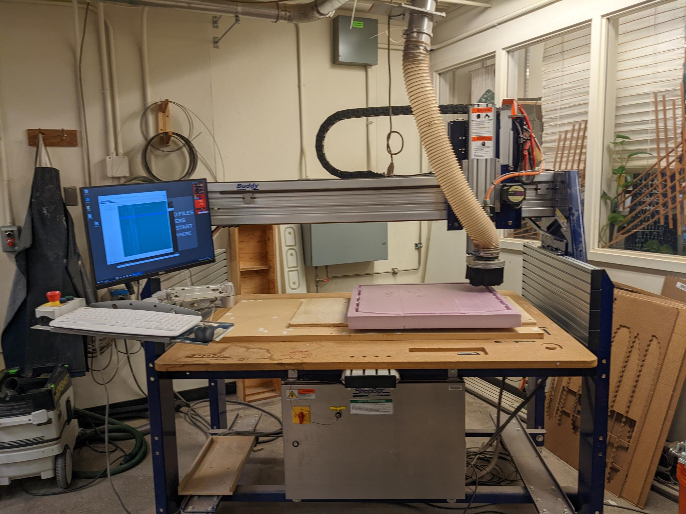
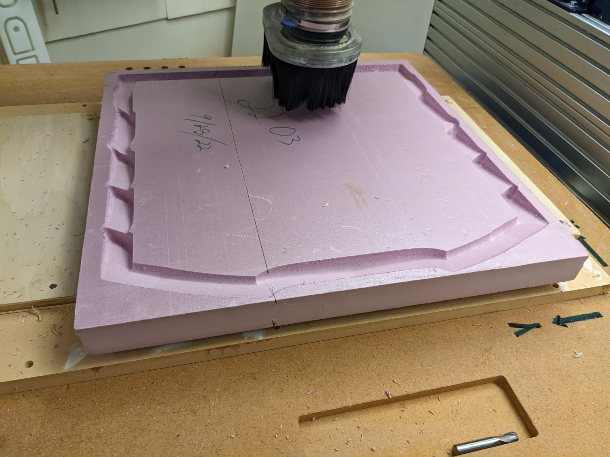

### Week 3: Fernel Design Continued
#### Monday - 9/26: Exploring New Fernel Designs with Autodesk 360
On Monday we focused on exploring possible alternative designs of the fernel mirror
to focus the light on a focal point. In our previous extrusion method, we realized that copying
and pasting the same section of mirror around a circle would result in an unintentionally low focal point.
Instead, we explored a grid pattern of 8x8 with wedges each designed around a focal point with a specific shape
to reflect vertical sunlight to a specified focal point. Although more labor intensive since we would have to
design each wedge on its own, it would resolve the issue we had with the previous iteration of the design
and focus the light on the desired focal point which we could move anywhere to the side.
This process involved a few steps.
1. Creating a plane in between the grid, a point vertically above the plane, and the focal point.
2. On this plane, we would draw a line connecting the vertical points above and on the plane.
3. We would then draw another line connecting the point on the plane with the focal point.
4. Finally, we bisect these two lines with another line, which is actually the normal of the mirror surface.
5. We create a plane for the mirror surface defined by the bisector.
These set of lines and planes would help us define the position of one line based on the grid square
and the focal point location, which can both be moved around. Since the plane is programmatically defined,
you are able to see the changes reflected in the mirror shape automatically.
I learned a bit more about how to construct sketches and planes and familiarized myself a bit more with the CADing
process on this day.
### Wednesday - 9/28: Starting to Machine Parts and exploring Autodesk Scripting
On Wednesday, we entered the machine shop for the first time. This time, we machined a subsection of the circular fernel mirror
design on a piece of foam. We wanted to just do a 24'' by 24'' section first and see what the resulting light being focused would look like.
This would contain a bit more than a 1/6 slice of the fernel mirror.
By actually being in the shop and seeing the G-code running, I learned a lot more and gained a lot better of an understanding
of the milling process. I learned about a few new tools/tricks when it comes to maching listed below:
- We can switch out different end mills
- We should warm up the spindle to ensure that the bearings don't get worn out
- We are able to use a torque screw to tighten the end mill on to a certain specified degree
- The positioning of the x-y-z origin can be set
This was just a whole lot of new information when it came to the machining process and it was really exciting to watch.
One other exploration I went through was thinking about how we might write scripts that are compatible
with Autodesk to automate some of the repetiveness of creating wedge and mirror pieces. I realized that Autodesk
actually has some basic tutorials and python libraries that are available to write your own add-ins and scripts.
This was pretty exciting and I hope to learn more about this part.


### Goals for Next Week:
1. Write a basic autodesk script that adds a button with a single functionality.
2. Create a new fernel mirror Design
3. Work with the machined foam to work on the mirror pieces that should be stuck on.